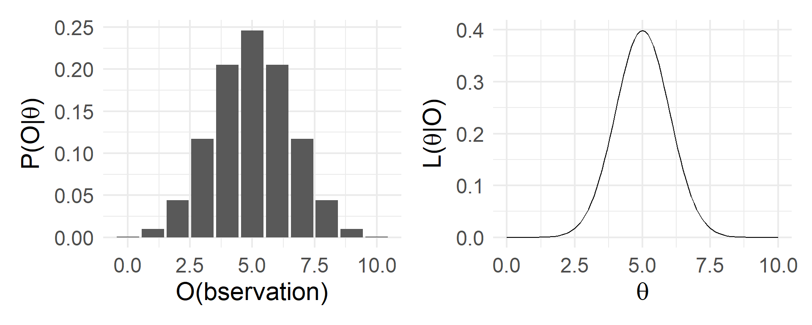

Hypothesis Testing: Concept and Operation
Large N & Leeuwenhoek (70700173)
Substantive definition
Theory (logic) ← real world

↓


→

How to get uncertainty
- Parametric: CI estimation
- Nonparametric: Bootstrap


Format
- Null (Random distribution): ℒ(null): Y = β0 + ε
- Theoretical (Your thought): ℒ(theory): Y = β0 + β1X + ε
- Testing (Hypothesis testing): ℒ(null) vs. ℒ(theory)

Let’s talk about alpha

| Decision | H0 T | H0 F |
|---|---|---|
| Reject | Type I error (Pr = α) | P = 1 - β |
| Fail to Reject | Pr = 1 - α | Type II error (Pr = β) |
How to get p < 0.05

守住拒腐防变防线，最紧要的是守住内心，从小事小节上守起，正心明道、怀德自重，勤掸“思想尘”、多思“贪欲害”、常破“心中贼”，以内无妄思保证外无妄动。
—— 2022年3月1日，习近平在中央党校（国家行政学院）中青年干部培训班开班式上的讲话
You DON’T!
Correct SE 
For small population, not small sample)
- Finite population correction, FPC: Without replacement, SE of X̄ ↑
- ⇒ uncertainty overestimated ⇒ correction: \(\sqrt{\frac{N - n}{N - 1}}\)
- n = 1 (sampling only one sample), Then \(SE = \frac{\sigma}{\sqrt{n}}\sqrt{\frac{N - n}{N - 1}} = \frac{\sigma}{\sqrt{n}}\), no changes;
- n = N (sampling all), SE = 0.
- n = 1000, N = 100,000,000 (large sample of a large population), \(FPC = \sqrt{\frac{100000000 - 1000}{100000000 - 1}}\approx .999\), little changes.
- n = 100, N = 108 (large sample of a small population), \(FPC = \sqrt{\frac{108 - 100}{108 - 1}}\approx 0.075\), some changes.
What does the FPC correct

One or Two Tailed Test

- Most applications are one-tail tests, while most software gives two-tail results.
- One-tailed test more often apply the critical value than confidence interval method.
Take-home point